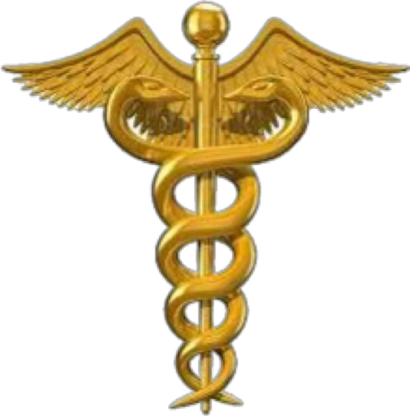
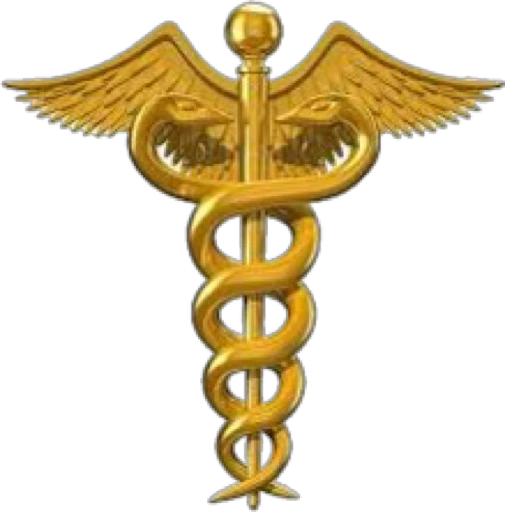

Pavlenko Medic
З турботою про жіночність
З турботою про жіночність

Завжди готова вам допомогти

Закінчивши програму навчання з акушерства в Одеському медичному університеті, я набула найсучасніші знання та практичні навички, щоб ефективно працювати у сфері акушерства. Впровадження сучасних методів навчання та доступ до клінічної практики дозволили мені готуватися до викликів сучасної медичної практики та створити міцну основу для подальшого професійного росту.

Пройшовши інтернатуру в Хмельницькому пологовому будиноку, я отримала унікальний досвід та поглиблені знання в області акушерства та гінекології. Під керівництвом висококваліфікованих спеціалістів я навчилась веденню вагітних, проведенню пологів та розв'язанню невідкладних ситуацій. Ця інтернатура надала мені важливі навички та досвід, що допоможуть мені ефективно працювати в медичній сфері та розвиватися як професіоналу
В даний період обіймала посади у різних конструктивних підрозділах: у жіночій консультативній поліклініці, акушерському відділенні та спеціалізованому центрі невиношування вагітності, екстрагенітальна патологія та інші.
Займаю посаду завідувача відділенням патології вагітності №2 й забезпечую компетентну та ефективну медичну допомогу жінкам з складними вагітностями. Мої обов'язки включають діагностику та лікування ускладнень вагітності, ведення жінок з високим ризиком передчасних пологів, контроль за розвитком плода та його станом, а також підтримку та поради для пацієнтів та їх сімей. Моя мета - забезпечити найвищий стандарт медичної допомоги та зробити все можливе для збереження здоров'я та безпеки матері та дитини.